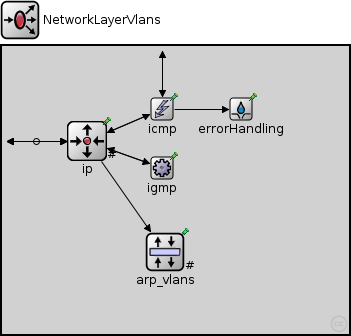
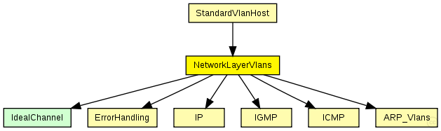

This documentation is released under the Creative Commons license
This documentation is released under the Creative Commons licenseNetwork layer of an IP node.
Interfaces to transport layer: TCP, UDP, echo/ping, RSVP
The following diagram shows usage relationships between types. Unresolved types are missing from the diagram. 
The following diagram shows inheritance relationships for this type. Unresolved types are missing from the diagram.
If a module type shows up more than once, that means it has been defined in more than one NED file.
| StandardVlanHost (compound module) |
IP host with TCP, UDP layers and applications. |
| Name | Type | Default value | Description |
|---|---|---|---|
| proxyARP | bool | true |
| Name | Value | Description |
|---|---|---|
| display | i=block/fork |
| Name | Direction | Size | Description |
|---|---|---|---|
| ifIn [ ] | input | ||
| tcpIn | input | ||
| udpIn | input | ||
| sctpIn | input |
I.R. |
|
| rsvpIn | input | ||
| ospfIn | input | ||
| pingIn | input | ||
| MANETIn | input | ||
| ifOut [ ] | output | ||
| TCPOut | output | ||
| udpOut | output | ||
| sctpOut | output |
I.R. |
|
| rsvpOut | output | ||
| ospfOut | output | ||
| pingOut | output | ||
| MANETOut | output |
| Name | Type | Default value | Description |
|---|---|---|---|
| ip.procDelay | double | 0s | |
| arp_vlans.retryTimeout | double | 1s |
number seconds ARP waits between retries to resolve an IP address |
| arp_vlans.retryCount | int | 3 |
number of times ARP will attempt to resolve an IP address |
| arp_vlans.cacheTimeout | double | 120s |
number seconds unused entries in the cache will time out |
| arp_vlans.globalARP | bool | false |
// // Network layer of an \IP node. // // Interfaces to transport layer: TCP, UDP, echo/ping, RSVP // module NetworkLayerVlans { parameters: bool proxyARP = default(true); @display("i=block/fork"); gates: input ifIn[]; input tcpIn; input udpIn; input sctpIn; //I.R. input rsvpIn; input ospfIn; input pingIn; input MANETIn; output ifOut[]; output TCPOut; output udpOut; output sctpOut; //I.R. output rsvpOut; output ospfOut; output pingOut; output MANETOut; submodules: ip: IP { parameters: timeToLive = 32; multicastTimeToLive = 32; fragmentTimeout = 60s; protocolMapping = "6:0,17:1,1:2,2:3,46:4,89:5,132:6,254:7,135:7"; @display("p=85,95;q=queue"); gates: transportIn[8]; transportOut[8]; queueIn[sizeof(ifIn)]; } arp_vlans: ARP_Vlans { parameters: proxyARP = proxyARP; @display("p=163,206;q=pendingQueue"); gates: nicOut[sizeof(ifOut)]; } icmp: ICMP { parameters: @display("p=160,63"); } igmp: IGMP { parameters: @display("p=160,122"); } errorHandling: ErrorHandling { parameters: @display("p=239,63"); } connections allowunconnected: // transport Layer ip.transportOut[0] --> TCPOut; ip.transportIn[0] <-- tcpIn; ip.transportOut[1] --> udpOut; ip.transportIn[1] <-- udpIn; ip.transportOut[2] --> icmp.localIn; ip.transportIn[2] <-- icmp.sendOut; ip.transportOut[3] --> igmp.localIn; ip.transportIn[3] <-- igmp.sendOut; ip.transportOut[4] --> rsvpOut; ip.transportIn[4] <-- rsvpIn; ip.transportOut[5] --> ospfOut; ip.transportIn[5] <-- ospfIn; ip.transportOut[6] --> sctpOut; //I.R. ip.transportIn[6] <-- sctpIn; ip.transportOut[7] --> MANETOut; ip.transportIn[7] <-- MANETIn; icmp.pingOut --> pingOut; icmp.pingIn <-- pingIn; icmp.errorOut --> errorHandling.in; ip.queueOut --> arp_vlans.ipIn; // L2 interfaces to IP and from ARP for i=0..sizeof(ifOut)-1 { ifIn[i] --> { @display("m=s"); } --> ip.queueIn[i]; } }
This documentation is released under the Creative Commons license